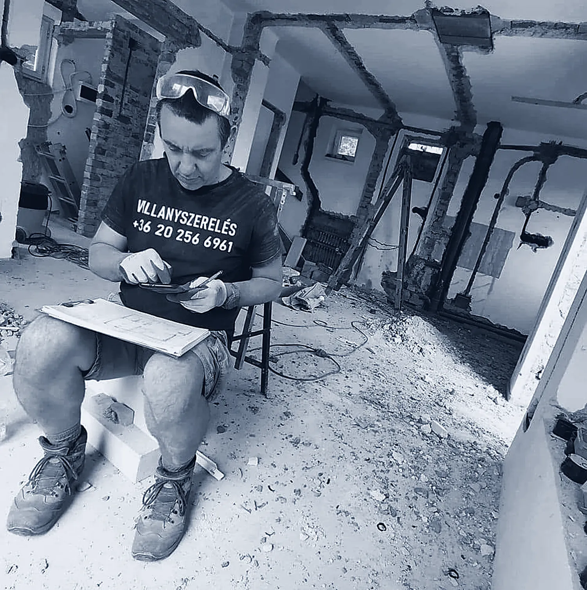

Hálózat kiépítése, felújítása, javítása
Családi házak és lakások villamos hálózata. Egy faház teljes alumínium hálózatát is kicseréltük, a burkolat kímélésével.

5,0 · 89 Google-vélemény
Családi házak és lakások villamos hálózatának kiépítése, felújítása és javítása, gépek bekötése, hibaelhárítás – és villamos biztonsági felülvizsgálat.
Szolgáltatások
Pécsen és környékén, lakásban és családi házban. Minden munka előtt részletes árajánlatot adunk, és az előre megbeszéltek szerint dolgozunk.
Családi házak és lakások villamos hálózata. Egy faház teljes alumínium hálózatát is kicseréltük, a burkolat kímélésével.
Felülvizsgálat és szakértés. Bérbeadásnál és ingatlan eladásánál kötelező – erről bővebben.
Bekötés és beüzemelés, például indukciós főzőlapé – pecséttel és aláírással igazolva a gyártói garanciához.
Lekapcsoló biztosíték, melegedő aljzat, nem működő áramkör: megkeressük az okát. Életvédelmi relé és kismegszakító cseréjét is vállaljuk.
Ami nálunk alap
Egy jó villanyszerelés utólag is átlátható. Ezt ügyfeleink is kiemelik a véleményekben:
Egy 2025-ben szerelt elosztónk: adattábla, mint egy gyári terméken.
Bérbeadás, eladás
„Bérbeadásnál és ingatlan értékesítésnél kötelező.”
Ezt az aljzatot gyúlékony ragasztóhabbal építették be a falba. Kívülről csak annyi látszott, hogy melegszik – a felülvizsgálat pont az ilyet keresi, mielőtt baj lesz.
Saját fotók
A Facebook-oldalunkról és a Google-adatlapunkról.
Vélemények
„Megbízható, profi szakember. Precíz, pontos munkát végez az előzetesen megbeszéltek szerint. Részletes árajánlatot adott, e-számla képes vállalkozó!”
Indukciós főzőlapot kötött be, életvédelmi relét és kismegszakítókat cserélt, mindent részletesen elmagyarázott, és a beszerelést pecséttel, aláírással igazolta a garanciához.
Egy faház teljes alumínium hálózatát cserélte ki a burkolat kímélésével, és magától érintésvédelmi vizsgálatot is végzett.
Árajánlat
Írja meg, milyen munkáról van szó, és visszahívjuk egyeztetni a felmérést. Ha sürgős, hívjon.
Igen, részletes árajánlatot adunk, és az előre megbeszéltek szerint dolgozunk.
Igen: bérbeadásnál és ingatlan értékesítésnél kötelező. A felülvizsgálatot és a villámvédelmi felülvizsgálatot is elvégezzük.
Igen, a beszerelést pecséttel és aláírással igazoljuk, így a gyártói garancia érvényesíthető.
Igen, elektronikus számlát adunk.
Igen. Egy faház teljes alumínium hálózatát is kicseréltük, a burkolat kímélésével.
Hétfőtől csütörtökig 8 és 20 óra között, pénteken 8 és 19 óra között. Telefon: +36 20 256 6961.